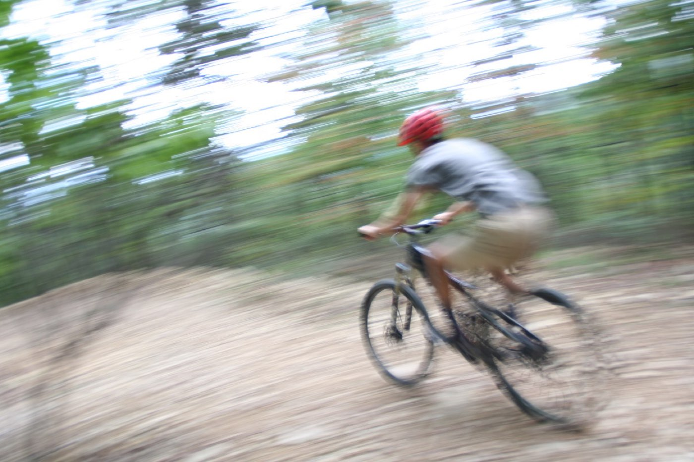

How rides end early
- The new corner. She put a hand out and now the wrist has a corner it didn’t have this morning. Check, splint, check again — wiggle, feel, warm.
- Berm, neck, green sky. He’s down off the berm saying his neck hurts, and the weather is coming. Moving him and protecting his spine aren’t opposites — if you know how.
- The guy who’s fine. Fifteen-foot ground fall, already joking. His heart rate has an opinion, but only if somebody takes it twice.
Front-load these five
Ordered by what actually ends ride days:
- Musculoskeletal Injuries — wrists, collarbones, and the splinting doctrine
- Spine & Helmets — when the lid stays on and how to move a neck
- Patient Assessment — serial vitals catch what jokes hide
- Bleeding & Wounds — rock gardens keep receipts
- Evacuation — ride out, walk out, or call — the actual math
Then pressure-test it
Interactive scenarios — one decision at a time, tempting mistakes included, debrief at the end:
- Don’t Sit Him Up — spine + storm, no good options, one right one
- Wiggle, Feel, Warm — the wrist, the splint, the re-check
- The Guy Who’s Fine — trend beats snapshot
The certification question, honestly. “Wilderness First Aid” isn’t a regulated credential. No government body defines what a WFA card means — it means whatever the company that printed it says it means. What counts in front of a patient is whether you can do the work. This course teaches the work, free, and issues a record of completion — not a certificate, and we won’t pretend otherwise. If a race series, bike patrol, or employer requires a provider’s card, take their class — you’ll walk in ahead. If nobody requires you to hold a card, what you need are the skills, not the laminate.
Parking-lot questions
Broken or sprained — can you tell on the trail?
Usually not, and it doesn’t change much: if it might be broken, treat it like it’s broken. Splint it padded and snug, check the fingers before and after (wiggle, feel, warm), and let an X-ray settle the argument in town.
When does a crashed rider stay off the bike?
Any head hit with confusion, any neck pain with a real mechanism, and any rider whose story keeps changing. “I’m fine” from a guy who just flew fifteen feet is a data point, not a diagnosis — take his pulse twice, ten minutes apart, and believe the trend.
Someone’s down past a blind feature — move them?
A rider in the landing zone is a scene-safety problem before he’s a spine problem. Post someone up-trail to stop traffic first. If you truly must move him, move him as one unit, spine in line — practice it here before it’s real.
What this is
Fifteen lessons, a 40-question knowledge check, sixteen practice scenarios, a printable field reference card, and a kit checklist. Free, no account, nothing recorded about you, source on GitHub. It teaches decision-making, not hands-on skill — practice the hands-on parts on a real, padded, complaining friend.
Same trails, different speeds: trail runners · thru-hikers & long-distance trekkers · bikepackers & gravel cyclists